Vue 工程化：Vite 与组件开发
Vue工程化
前面我们在介绍Vue的时候，我们讲到Vue是一款用于构建用户界面的渐进式JavaScript框架 。（官方：https://cn\.vuejs\.org/）
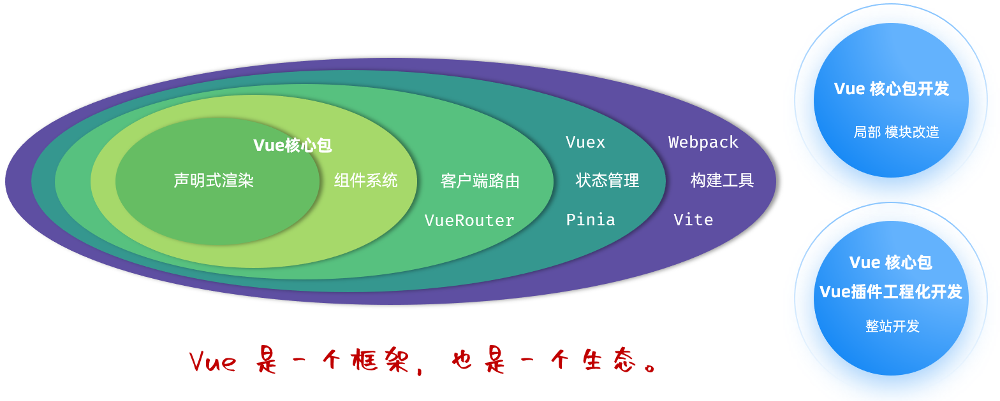
那在前面的课程中，我们已经学习了Vue的基本语法、表达式、指令，并基于Vue的核心包，完成了Vue的案例。 那今天呢，我们要来讲解的基于Vue进行整站开发。
介绍
在前面的课程中，我们学习了HTML、CSS、JS、Axios(ajax只是一种异步请求的方法,可以用JS直接手写,但是使用axios可以更加优雅 )、Vue等技术，并基于完成了一些前端开发的案例 。我们目前的前端开发中，当我们需要使用一些资源时，例如：vue.js，和 axios.js 文件，都是直接再工程中导入的，如下图所示：
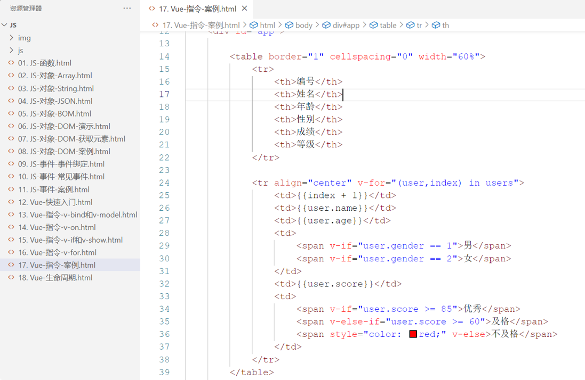
但是上述开发模式存在如下问题：
- 不规范：每次开发都是从零开始，比较麻烦
- 难复用：多个页面中的组件共用性不好
- 难维护：js、图片等资源没有规范化的存储目录，没有统一的标准，不方便维护
所以现在企业开发中更加讲究前端工程化方式的开发，主要包括如下4个特点:
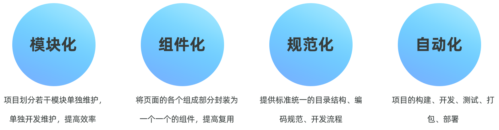
- 模块化：将js和css等，做成一个个可复用模块
- 组件化：我们将UI组件，css样式，js行为封装成一个个的组件，便于管理
- 规范化：我们提供一套标准的规范的目录接口和编码规范，所有开发人员遵循这套规范
- 自动化：项目的构建，测试，部署全部都是自动完成
所以对于前端工程化，说白了，就是在企业级的前端项目开发中，把前端开发所需要的工具、技术、流程、经验进行规范化和标准化。从而统一开发规范、提升开发效率，降低开发难度、提高复用等等。接下来我们就需要学习vue的官方提供的脚手架帮我们完成前端的工程化。
环境准备
介绍
介绍：create-vue是Vue官方提供的最新的脚手架工具，用于快速生成一个工程化的Vue项目。
create-vue提供了如下功能：
统一的目录结构
本地调试
热部署
单元测试
集成打包上线
而要想使用create-vue来创建vue项目，则必须安装依赖环境：NodeJS
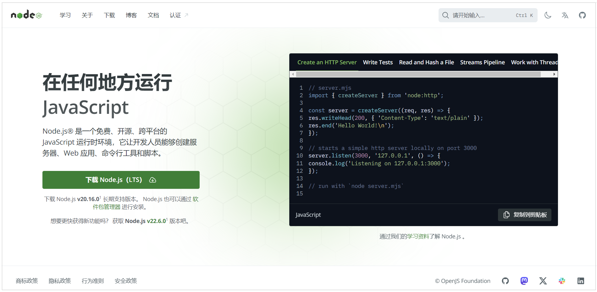
NodeJS安装
安装包，在课程资料中已经提供了。如下：
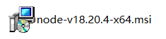
1). 双击msi文件，勾选我接受
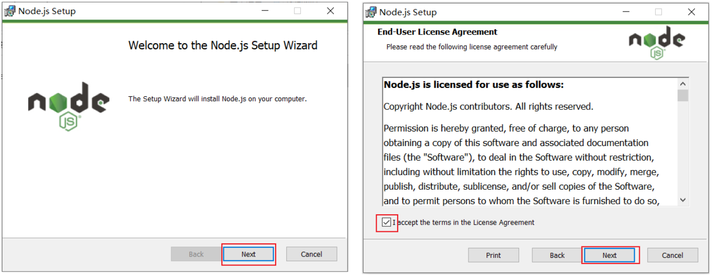
**2). 选择安装 到一个，**没有中文，没有空格 的目录下（新建一个文件夹NodeJS）
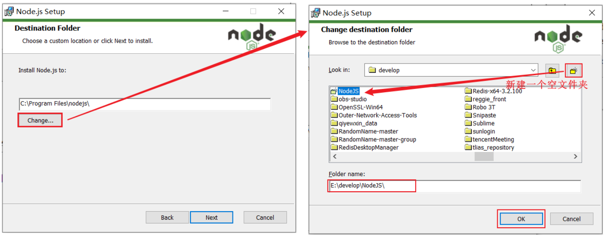
3). 点击 Next，下一步下一步的安装即可。
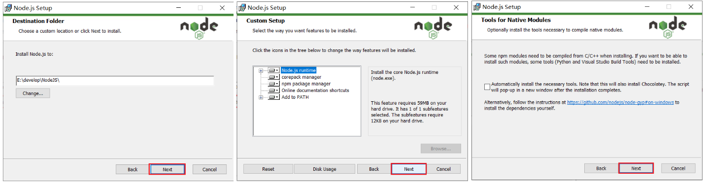
4). 验证NodeJS的环境变量
NodeJS 安装完毕后，会自动配置好环境变量，我们验证一下是否安装成功，通过： node -v
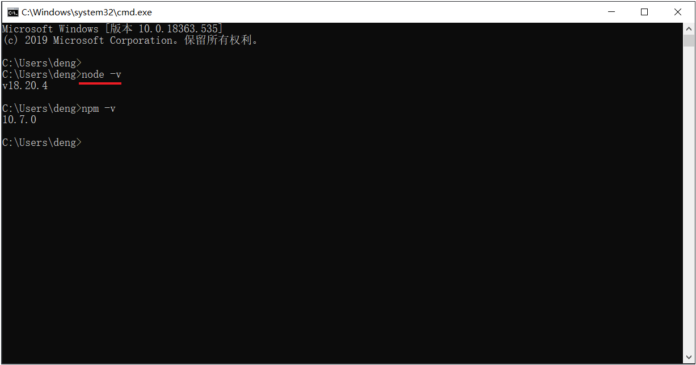
5). 配置npm的全局安装路径
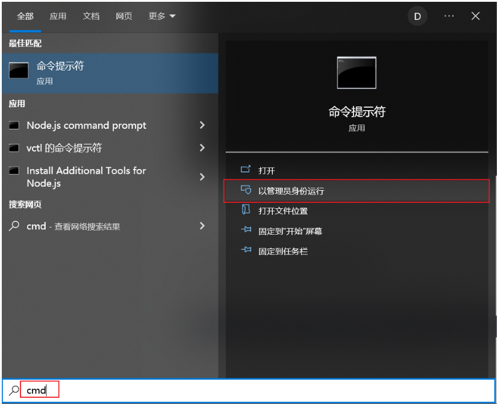
使用 管理员身份运行命令行，在命令行中，执行如下指令：
npm config set prefix "D:\develop\NodeJS"
注意：D:\develop\NodeJS 这个目录是NodeJS的安装目录 !!!!!
注意：D:\develop\NodeJS 这个目录是NodeJS的安装目录 !!!!!
注意：D:\develop\NodeJS 这个目录是NodeJS的安装目录 !!!!!
6). 切换为淘宝镜像，加速下载：
npm config set registry https://registry.npmmirror.com
npm介绍
- **npm：**Node Package Manager，是NodeJS的软件包管理器。

在开发前端项目的过程中，我们需要相关的依赖，就可以直接通过 npm install xxx 命令，直接从远程仓库中将依赖直接下载到本地了。
Vue项目创建
项目创建
创建一个工程化的Vue项目，执行命令：npm create vue``@3.3.4
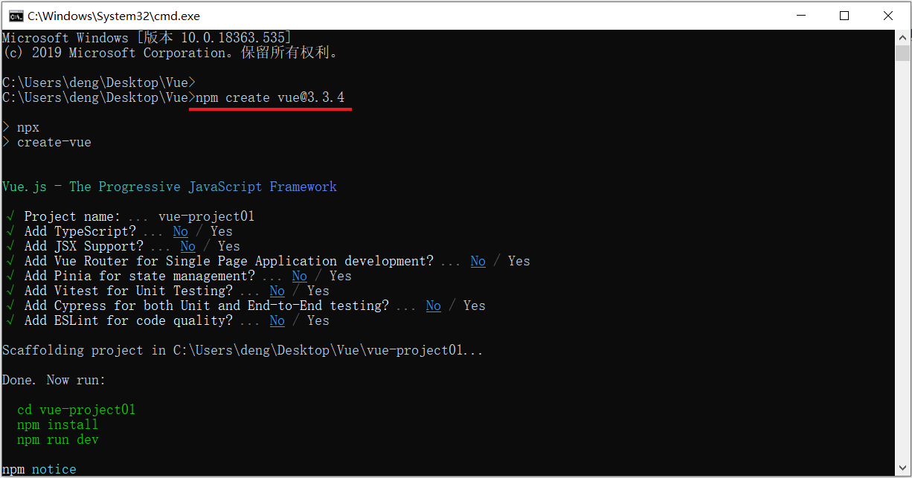
详细步骤说明：
Project name：------------------》项目名称，默认值：vue-project，可输入想要的项目名称。Add TypeScript?----------------》是否加入TypeScript组件？默认值：No。Add JSX Support?--------------》是否加入JSX支持？默认值：No。Add Vue Router...--------------》是否为单页应用程序开发添加Vue Router路由管理组件？默认值：No。Add Pinia ...----------------------》是否添加Pinia组件来进行状态管理？默认值：No。Add Vitest ...---------------------》是否添加Vitest来进行单元测试？默认值：No。Add an End-to-End ...-----------》是否添加端到端测试？默认值No。Add ESLint for code quality?---》是否添加ESLint来进行代码质量检查？默认值：No。
**提示：**执行上述指令，将会安装并执行 create-vue，它是 Vue 官方的项目脚手架工具
项目创建完成以后，进入vue-project01 项目目录，执行命令安装当前项目的依赖：npm install
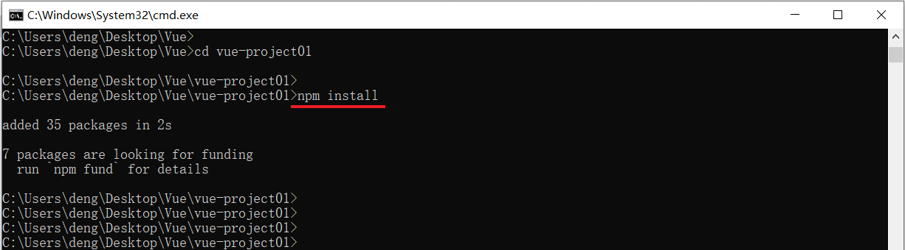
创建项目以及安装依赖的过程，都是需要联网的。【如果网络不太好，可能会造成依赖下载不完整报错，继续再次执行 命令安装。】
项目结构
我们可以使用VsCode直接打开这个Vue项目。
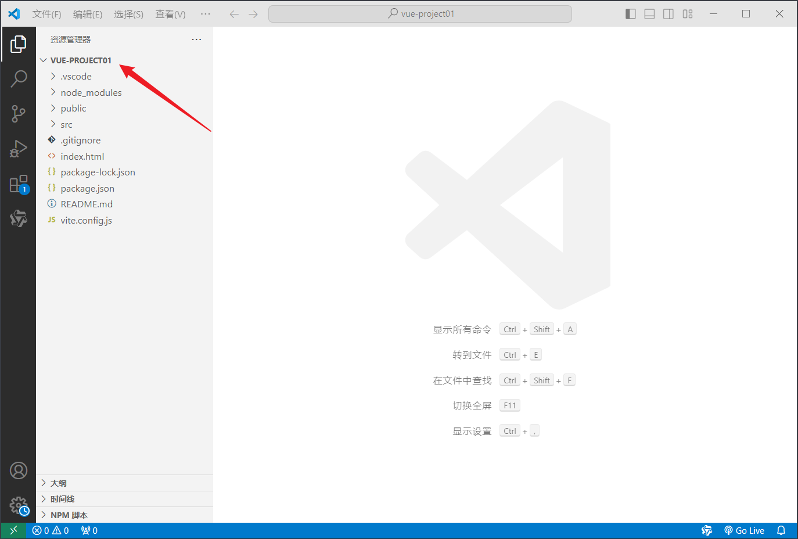
这是我们创建的第一个项目结构，接下来呢，我们来介绍一下这个项目的结构。如图所示：
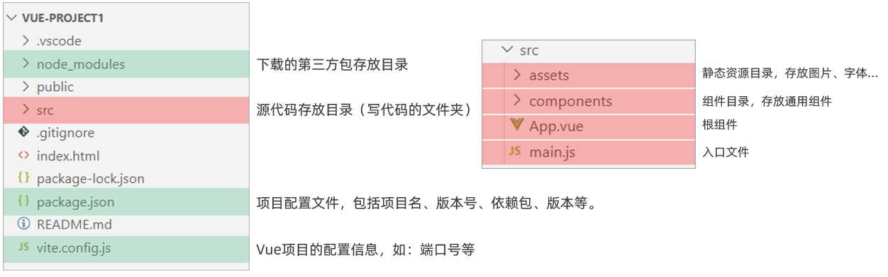
在上述的目录中，我们以后操作的最多的目录，就是src目录，因为我们需要在这个目录下来编写前端代码。
启动项目
- 方式一：命令行
启动项目，我们可以在命令行中执行命令：npm run dev，就可以启动Vue项目了。
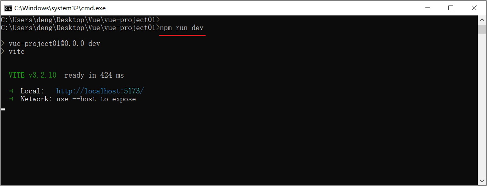
- 方式二：Vscode图形化界面
点击NPM脚本中的dev后的运行按钮，就可以启动项目。
(如果 NPM 脚本未出现右击 展示显示就行)
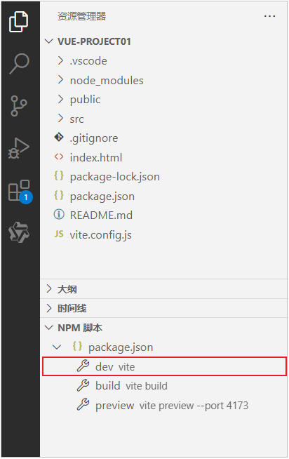
启动起来之后，我们就可以访问前端Vue项目了，访问路径：http://localhost:5173
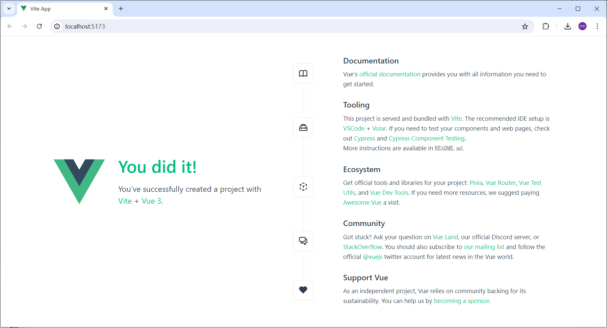
Vue项目开发流程
如下图：
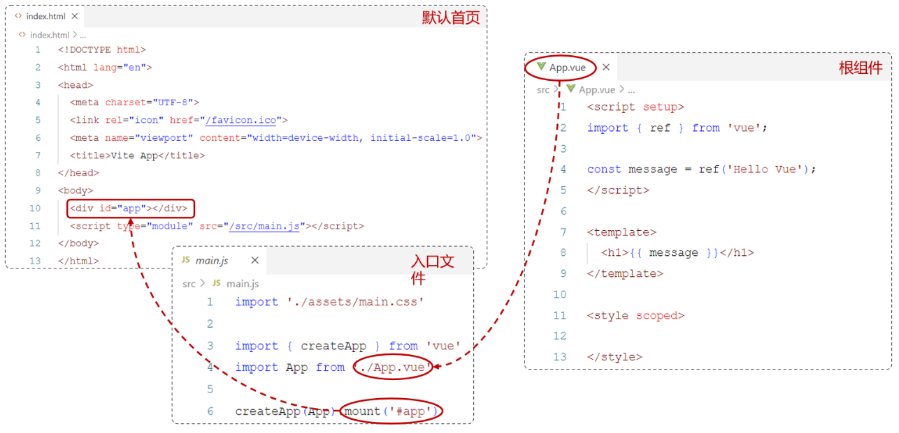
其中*.vue是Vue项目中的组件文件，在Vue项目中也称为单文件组件（SFC，Single-File Components）。Vue 的单文件组件会将一个组件的逻辑 (JS)，模板 (HTML) 和样式 (CSS) 封装在同一个文件里（*.vue）
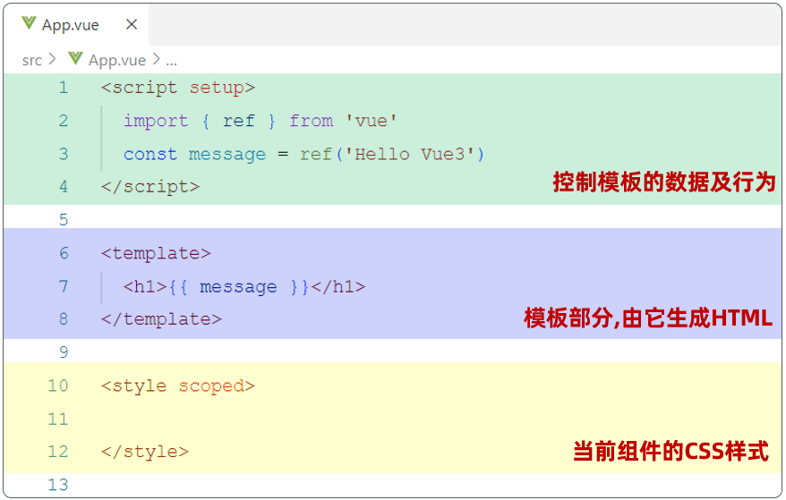
API风格
- Vue的组件有两种不同的风格：组合式API 和 选项式API
- 组合式API**：**是Vue3提供的一种基于函数的组件编写方式，通过使用函数来组织和复用组件的逻辑。它提供了一种更灵活、更可组合的方式来编写组件。代码形式如下：
<script setup> //添加标识 , 对vue实现预处理 , 实现使用组合式API ;
import { ref, onMounted } from 'vue'; 引入函数
const count = ref(0); //声明响应式变量
function increment(){ //声明函数
count.value++;
}
onMounted(() => { //声明钩子函数
console.log('Vue Mounted....');
})
</script>
<template>
<input type="button" @click="increment"> Api Demo1 Count : {{ count }}
</template>
<style scoped>
</style>
setup：是一个标识，告诉Vue需要进行一些处理，让我们可以更简洁的使用组合式API。ref()：接收一个内部值，返回一个响应式的ref对象，此对象只有一个指向内部值的属性 value。onMounted()：在组合式API中的钩子方法，注册一个回调函数，在组件挂载完成后执行。- 选项式API
**选项式API：**可以用包含多个选项的对象来描述组件的逻辑，如：data，methods，mounted等。选项定义的属性都会暴露在函数内部的this上，它会指向当前的组件实例。
<script>
export default{
data() {
return {
count: 0
}
},
methods: {
increment: function(){
this.count++
}
},
mounted() {
console.log('vue mounted.....');
}
}
</script>
<template>
<input type="button" @click="increment">Api Demo1 Count : {{ count }}
</template>
<style scoped>
</style>
在Vue中的组合式API使用时，是没有this对象的，this对象是undefined。
案例
在Vue项目中，基于组合式API完成用户列表数据渲染。 要求：在页面加载完毕之后，发送异步请求，加载数据，渲染表格。
最终实现效果：
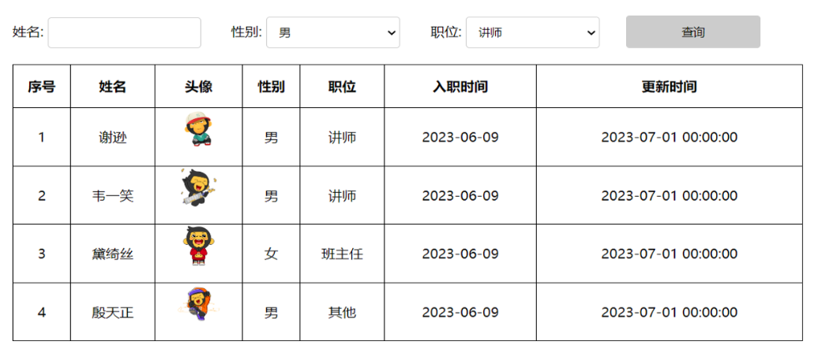
代码实现如下：
在 src 下定义 views 目录，在 views 目录中定义文件 UserList.vue， 然后，我们就可以将之前实现的Vue案例中的代码，基于Vue工程化的形式来实现一遍。 (之前实现的这个页面，在资料中已经提供了：1.工程化-案例-素材.html)
1). 把原来定义的CSS样式代码，拷贝到 <style></style> 标签中。
2). 把页面的<div id="app"></div> 中的页面展示的html标签代码，拷贝到 <template></template> 标签中。
3). 将页面的JS代码，按照组合式API的形式，在 <script></script> 中定义出来。
4). 而由于在这个案例中，需要用到axios来发送异步请求，所以还需要安装 axios。
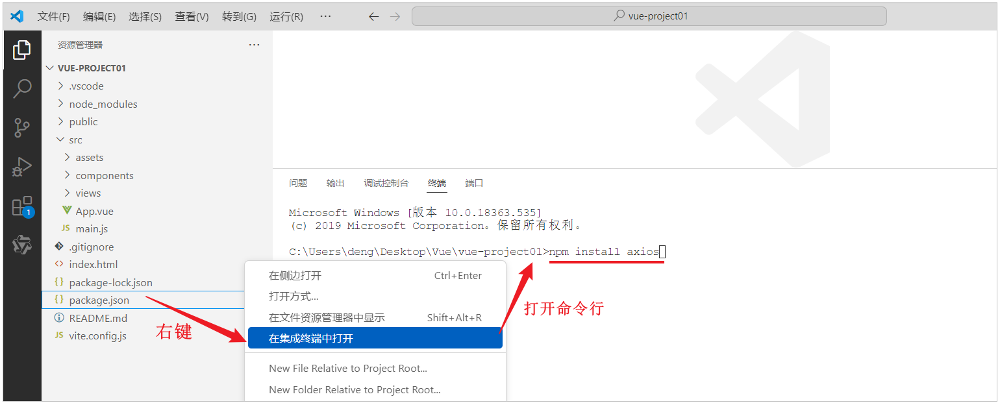
具体代码如下：
views/UserList.vue 代码如下：
<script setup>
//引入ref
import { ref, onMounted } from 'vue'
//实现引入axios需要提前使用 npm install axios 工具类,之后才能实现类引用;
import axios from 'axios'
//声明数据变量 userList, name, gender, job
const userList = ref([])
const name = ref('')
const gender = ref('')
const job = ref('')
//声明函数,基于axios查询数据
const search = async() => {
//发送请求.添加配套的关键词:await , async 可以实现异步请求变成同步请求
const result = await axios.get(`https://web-server.itheima.net/emps/list?name=${name.value}&gender=${gender.value}&job=${job.value}`).then(res => {
//将查询到的数据赋值给userList 传回的值为JSON格式的,先使用.data得到属性,然后使用.data获取数值
userList.value = result.data.data
})
}
//定义钩子函数 onMounted --> 箭头函数
onMounted(() => {
//调用search函数
search()
})
</script>
<template>
<div id="center">
姓名: <input type="text" name="name" v-model="name">
性别:
<select name="gender" v-model="gender">
<option value="1">男</option>
<option value="2">女</option>
</select>
职位:
<select name="job" v-model="job">
<option value="1">班主任</option>
<option value="2">讲师</option>
<option value="3">其他</option>
</select>
<input class="btn" type="button" value="查询" @click="search">
</div>
<table>
<tr>
<th>序号</th>
<th>姓名</th>
<th>头像</th>
<th>性别</th>
<th>职位</th>
<th>入职时间</th>
<th>更新时间</th>
</tr>
<!-- v-for 用于列表循环渲染元素 -->
<tr v-for="(user, index) in userList" :key="user.id">
<td>{{index + 1}}</td>
<td>{{user.name}}</td>
<td> <img :src="user.image"> </td>
<td>
<span v-if="user.gender == 1">男</span>
<span v-else-if="user.gender == 2">女</span>
<span v-else>其他</span>
</td>
<td>
<span v-show="user.job == 1">班主任</span>
<span v-show="user.job == 2">讲师</span>
<span v-show="user.job != 1 && user.job != 2">其他</span>
</td>
<td>{{user.entrydate}}</td>
<td>{{user.updatetime}}</td>
</tr>
</table>
</template>
<style scoped>
table,th,td {
border: 1px solid #000;
border-collapse: collapse;
line-height: 50px;
text-align: center;
}
#center,table {
width: 60%;
margin: auto;
}
#center {
margin-bottom: 20px;
}
img {
width: 50px;
}
input,select {
width: 17%;
padding: 10px;
margin-right: 30px;
border: 1px solid #ccc;
border-radius: 4px;
}
.btn {
background-color: #ccc;
}
</style>
然后在 App.vue 中，将 UserList.vue 引入进来。
<script setup>
import UserList from './views/user/UserList.vue'
</script>
<template>
<UserList></UserList>
</template>
<style scoped>
</style>
最终展示形式如下：
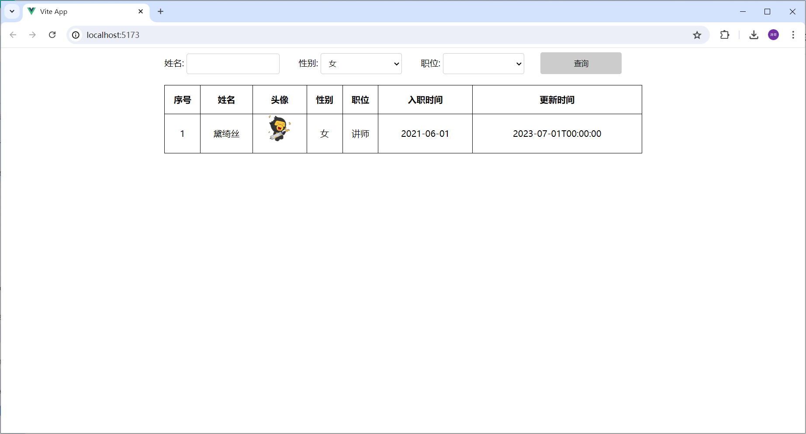
组合式 API 中没有实现this . 使用变量名.value 实现更新数据的内容 ;
ElementPlus
介绍
Element：是饿了么公司前端开发团队提供的一套基于 Vue3 的网站组件库，用于快速构建网页。
Element 提供了很多组件（组成网页的部件）供我们使用。例如 超链接、按钮、图片、表格等等。
官方网站：https://element\-plus\.org/zh\-CN/\#/zh\-CN
如下图所示就是我们开发的页面和ElementUI提供的效果对比：可以发现ElementUI提供的各式各样好看的按钮。
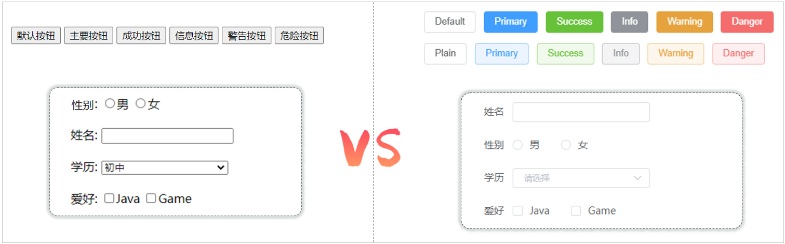
ElementPlus的学习方式和我们之前的学习方式不太一样，对于ElementPlus，我们作为一个后台开发者，只需要学会如何从 ElementPlus 的官网拷贝组件到我们自己的页面中，并且做一些修改即可。 我们主要学习的是ElementPlus中提供的常用组件，至于其他组件同学们可以通过我们这几个组件的学习掌握到ElementPlus的学习技巧，然后课后自行学习。
快速入门
准备工作：
1). 将资料中提供的基础工程（资料/04. ElementPlus基础工程/vue-project02.zip），解压到工作目录中，使用VSCode将其打开。
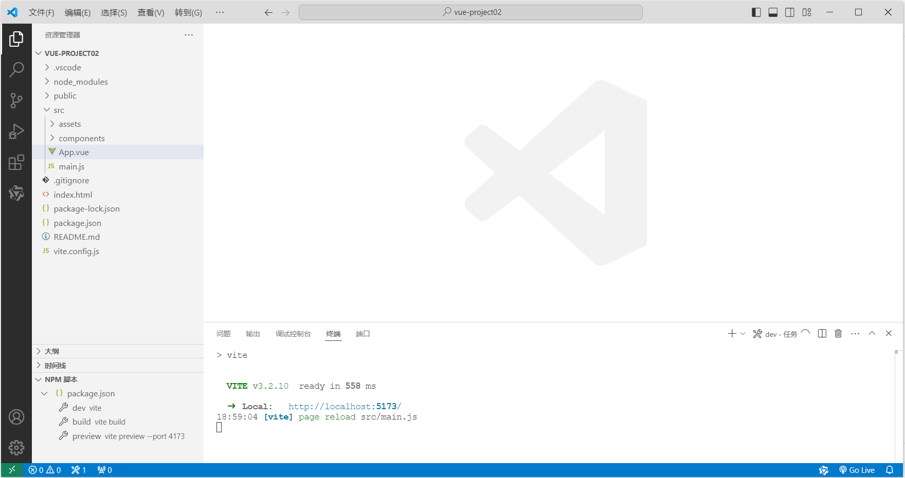
2). 参照官方文档，安装ElementPlus的组件库（在当前工程的目录下），执行如下命令：【这一步可以不做，已经安装好了】
npm install element-plus@2.4.4 --save

3). 在main.js 中引入ElementPlus组件库 （参照官方文档），最终 main.js 中代码如下：
import { createApp } from 'vue'
import App from './App.vue'
import ElementPlus from 'element-plus'
import 'element-plus/dist/index.css'
const app = createApp(App)
app.use(ElementPlus)
app.mount('#app')
制作组件：
1）. 访问ElementPlus的官方文档，查看对应的组件源代码。
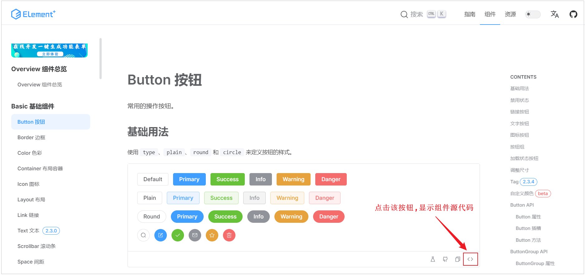
2). 在 src下创建 views 目录，在 views 目录下，创建Element.vue组件文件，复制组件代码，调整成自己想要的 。
<script setup>
</script>
<template>
<el-row class="mb-4">
<el-button>Default</el-button>
<el-button type="primary">Primary</el-button>
<el-button type="success">Success</el-button>
<el-button type="info">Info</el-button>
<el-button type="warning">Warning</el-button>
<el-button type="danger">Danger</el-button>
</el-row>
</template>
<style scoped>
</style>
3). 在根组件 app.vue 中引入Element.vue
<script setup>
import Element from './views/Element.vue'
</script>
<template>
<Element></Element>
</template>
<style scoped>
</style>
4). 启动项目，访问 http://localhost:5173
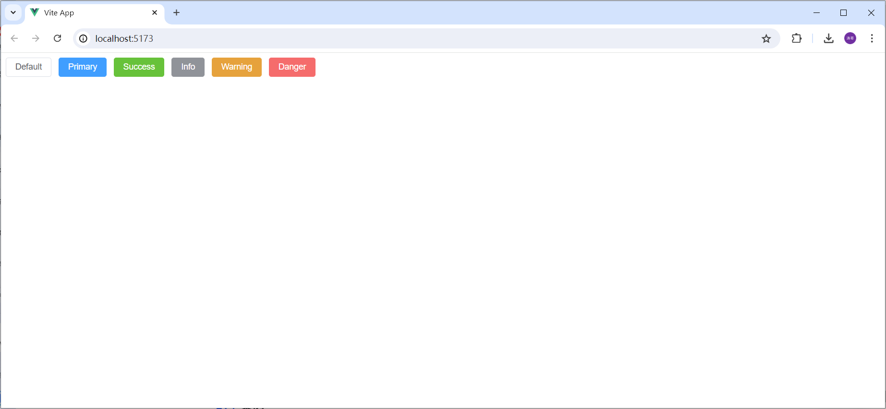
常见组件
表格组件
用于展示多条结构类似的数据， 可对数据进行排序、筛选、对比或其他自定义操作。
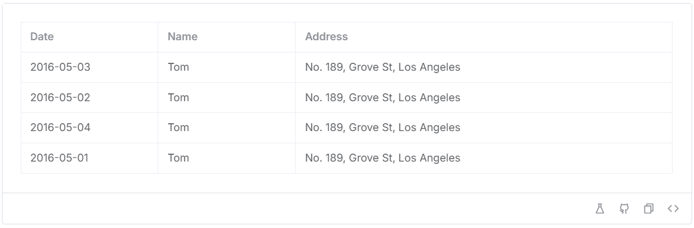
接下来我们通过代码来演示。
首先我们需要来到 ElementPlus 的组件库中，找到表格组件，如下图所示：
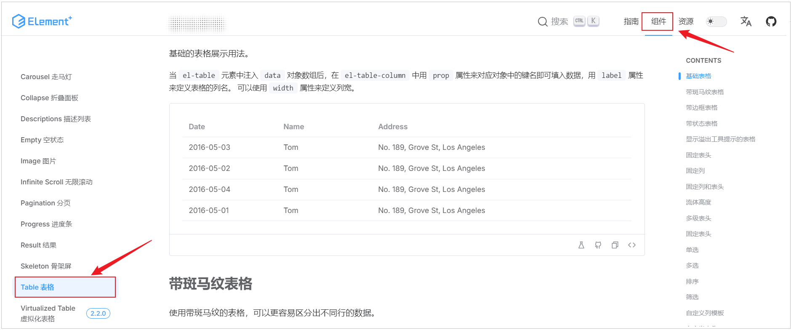
然后在 Element.vue 组件中继续制作表格。组件中，需要注意的是，我们组件包括了3个部分，如果官方有除了<template>部分之外的<style>和<script>都需要复制。具体操作如下图所示：
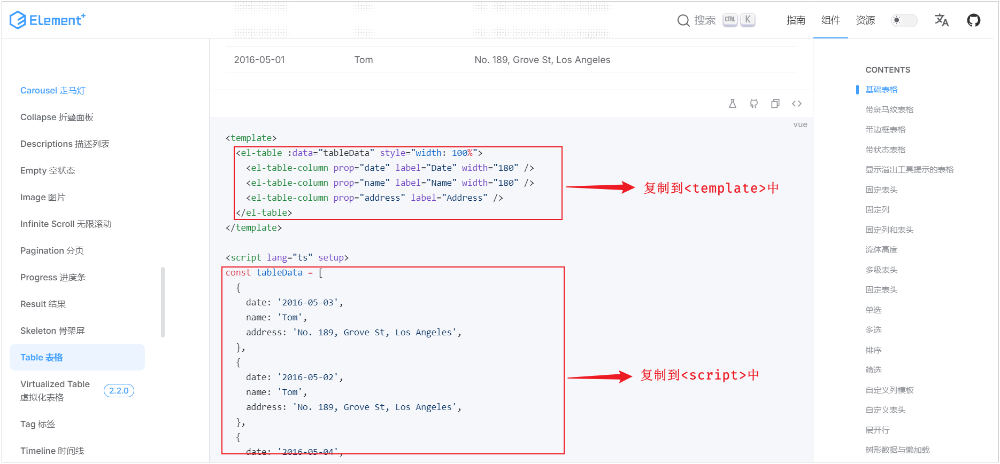
整体代码如下所示(绿色背景部分代码为本次增加的代码)：
<script setup>
const tableData = [
{date: '2016-05-03', name: 'Tom', address: 'No. 189, Grove St, Los Angeles'},
{date: '2016-05-02', name: 'Tom', address: 'No. 189, Grove St, Los Angeles'},
{date: '2016-05-04', name: 'Tom', address: 'No. 189, Grove St, Los Angeles'},
{date: '2016-05-01', name: 'Tom', address: 'No. 189, Grove St, Los Angeles'}
]
</script>
<template>
<!-- Button按钮 -->
<el-row class="mb-4">
<el-button>Default</el-button>
<el-button type="primary">Primary</el-button>
<el-button type="success">Success</el-button>
<el-button type="info">Info</el-button>
<el-button type="warning">Warning</el-button>
<el-button type="danger">Danger</el-button>
</el-row>
<br>
<!-- Table表格 -->
<el-table :data="tableData" border style="width: 100%">
<el-table-column prop="date" label="Date" width="180" />
<el-table-column prop="name" label="Name" width="180" />
<el-table-column prop="address" label="Address" />
</el-table>
</template>
<style scoped>
</style>
此时回到浏览器，我们页面呈现如下效果：
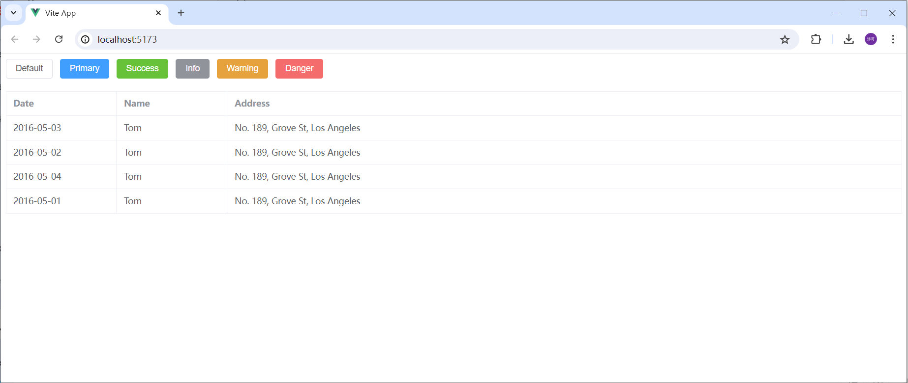
Table表格组件，属性说明：
data: 主要定义table组件的数据模型prop: 定义列的数据应该绑定data中定义的具体的数据模型label: 定义列的标题width: 定义列的宽度
分页条组件
Pagination: 分页组件，主要提供分页工具条相关功能。其展示效果图下图所示：
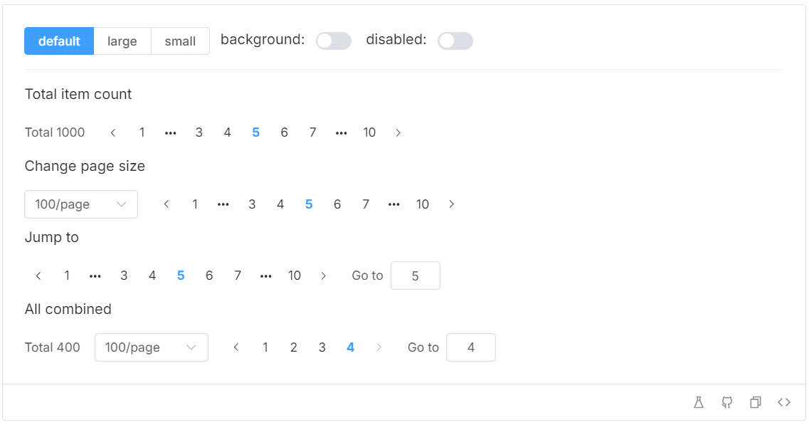
默认情况下，ElementPlus的组件是英文的，如果希望使用中文语言，可以在 main.js 中做如下配置：
import zhCn from 'element-plus/dist/locale/zh-cn.mjs'
app.use(ElementPlus, {locale: zhCn})
接下来我们通过代码来演示功能。
首先在官网找到分页组件，我们选择带背景色分页组件，如下图所示：
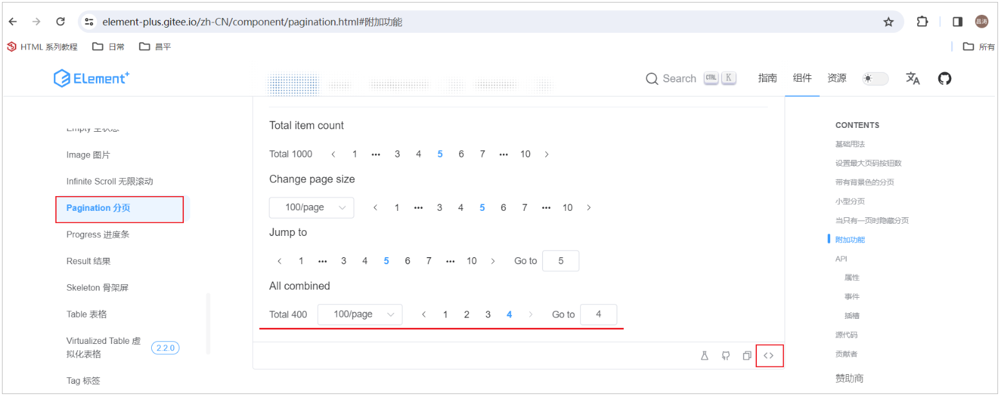
然后复制代码到我们的 Element.vue 组件文件的template中，在 <template> </template> 拷贝如下代码：
<el-pagination
v-model:current-page="currentPage4"
v-model:page-size="pageSize4"
:page-sizes="[100, 200, 300, 400]"
layout="total, sizes, prev, pager, next, jumper"
:total="400"
@size-change="handleSizeChange"
@current-change="handleCurrentChange"
/>
在 <script> </script> 中拷贝如下代码：
import { ref } from 'vue'
const currentPage4 = ref(4)
const pageSize4 = ref(100)
const handleSizeChange = (val) => {
console.log(`${val} items per page`)
}
const handleCurrentChange = (val) => {
console.log(`current page: ${val}`)
}
目前，整个 Element.vue 的文件内容如下(绿色背景部分代码为本次增加的代码)：
<script setup>
import { ref } from 'vue'
const tableData = [
{date: '2016-05-03', name: 'Tom', address: 'No. 189, Grove St, Los Angeles'},
{date: '2016-05-02', name: 'Tom', address: 'No. 189, Grove St, Los Angeles'},
{date: '2016-05-04', name: 'Tom', address: 'No. 189, Grove St, Los Angeles'},
{date: '2016-05-01', name: 'Tom', address: 'No. 189, Grove St, Los Angeles'}
]
const currentPage4 = ref(4)
const pageSize4 = ref(100)
const handleSizeChange = (val) => {
console.log(`${val} items per page`)
}
const handleCurrentChange = (val) => {
console.log(`current page: ${val}`)
}
</script>
<template>
<!-- Button按钮 -->
<el-row class="mb-4">
<el-button>Default</el-button>
<el-button type="primary">Primary</el-button>
<el-button type="success">Success</el-button>
<el-button type="info">Info</el-button>
<el-button type="warning">Warning</el-button>
<el-button type="danger">Danger</el-button>
</el-row>
<br>
<!-- Table表格 -->
<el-table :data="tableData" border style="width: 100%">
<el-table-column prop="date" label="Date" width="180" />
<el-table-column prop="name" label="Name" width="180" />
<el-table-column prop="address" label="Address" />
</el-table>
<br>
<el-pagination
v-model:current-page="currentPage4"
v-model:page-size="pageSize4"
:page-sizes="[100, 200, 300, 400]"
layout="total, sizes, prev, pager, next, jumper"
:total="400"
@size-change="handleSizeChange"
@current-change="handleCurrentChange"
/>
</template>
<style scoped>
</style>
打开浏览器，查看页面效果如下：

Pagination 分页组件的属性如下：
对于分页组件我们需要关注的是如下几个重要属性（可以通过查阅官网组件中最下面的组件属性详细说明得到）：
background: 添加北京颜色，也就是上图蓝色背景色效果。layout: 分页工具条的布局，其具体值包含sizes,prev,pager,next,jumper,total这些值total: 数据的总数量
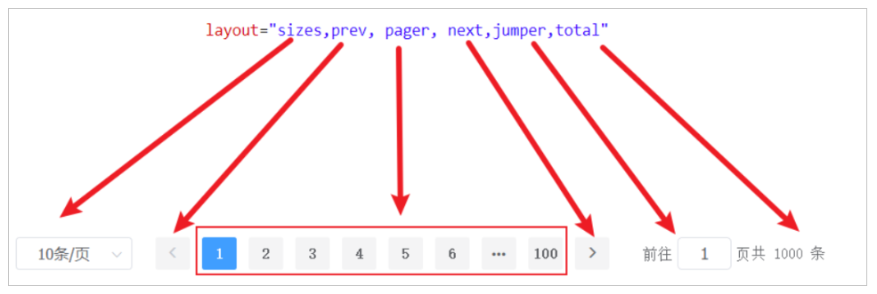
对于分页组件，除了上述几个属性，还有2个非常重要的事件我们需要去学习：
size-change： pageSize 改变时会触发current-change：currentPage 改变时会触发
对话框组件
在保留当前页面状态的情况下，告知用户并承载相关操作。
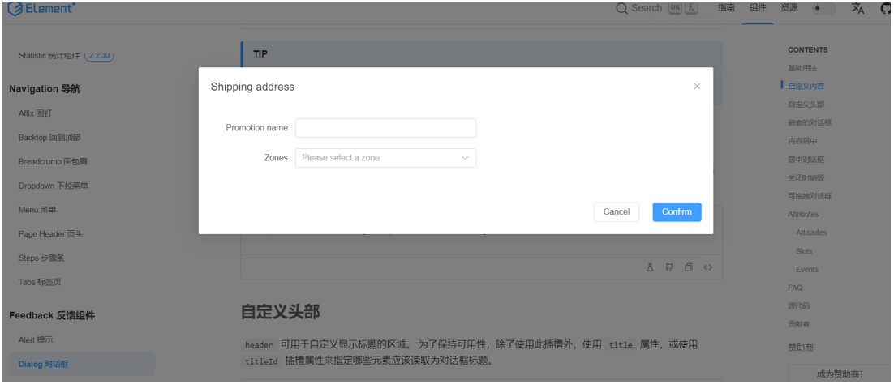
首先我们需要在ElementPlus官方找到Dialog组件，如下图所示：
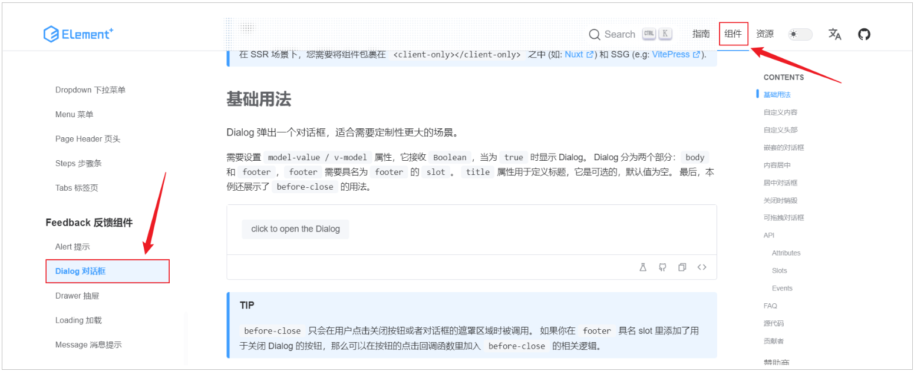
然后复制如下代码到我们的组件文件 Element.vue 的 <template></template> 模块中：
<el-button @click="dialogTableVisible = true">
打开对话框
</el-button>
<el-dialog v-model="dialogTableVisible" title="Shipping address">
<el-table :data="tableData">
<el-table-column property="date" label="Date" width="150" />
<el-table-column property="name" label="Name" width="200" />
<el-table-column property="address" label="Address" />
</el-table>
</el-dialog>
然后复制如下代码到我们的组件文件 Element.vue 的 <script></script> 模块中：
const dialogTableVisible = ref(false)
最终，完成的 Element.vue 的代码如下：
<script setup>
import { ref } from 'vue'
const tableData = [
{date: '2016-05-03', name: 'Tom', address: 'No. 189, Grove St, Los Angeles'},
{date: '2016-05-02', name: 'Tom', address: 'No. 189, Grove St, Los Angeles'},
{date: '2016-05-04', name: 'Tom', address: 'No. 189, Grove St, Los Angeles'},
{date: '2016-05-01', name: 'Tom', address: 'No. 189, Grove St, Los Angeles'}
]
const currentPage4 = ref(4)
const pageSize4 = ref(100)
const handleSizeChange = (val) => {
console.log(`${val} items per page`)
}
const handleCurrentChange = (val) => {
console.log(`current page: ${val}`)
}
// Dialog对话框
const dialogTableVisible = ref(false)
</script>
<template>
<!-- Button按钮 -->
<el-row class="mb-4">
<el-button>Default</el-button>
<el-button type="primary">Primary</el-button>
<el-button type="success">Success</el-button>
<el-button type="info">Info</el-button>
<el-button type="warning">Warning</el-button>
<el-button type="danger">Danger</el-button>
</el-row>
<br>
<!-- Table表格 -->
<el-table :data="tableData" border style="width: 100%">
<el-table-column prop="date" label="Date" width="180" />
<el-table-column prop="name" label="Name" width="180" />
<el-table-column prop="address" label="Address" />
</el-table>
<br>
<el-pagination
v-model:current-page="currentPage4"
v-model:page-size="pageSize4"
:page-sizes="[100, 200, 300, 400]"
layout="total, sizes, prev, pager, next, jumper"
:total="400"
@size-change="handleSizeChange"
@current-change="handleCurrentChange"
/>
<br>
<el-button @click="dialogTableVisible = true">
打开对话框
</el-button>
<el-dialog v-model="dialogTableVisible" title="Shipping address">
<el-table :data="tableData">
<el-table-column property="date" label="Date" width="150" />
<el-table-column property="name" label="Name" width="200" />
<el-table-column property="address" label="Address" />
</el-table>
</el-dialog>
</template>
<style scoped>
</style>
打开浏览器，最终的页面效果如下：
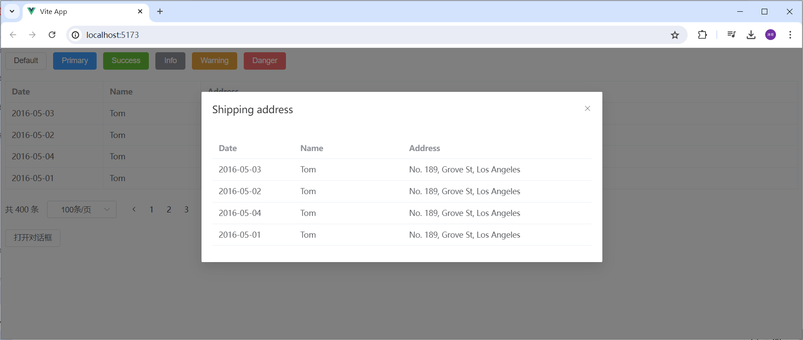
Dialog对话框组件使用的关键点，就是控制其显示与隐藏。 通过 v-model 给定的boolean值，来控制Dialog的显示与隐藏。
表单组件
Form 表单：由输入框、选择器、单选框、多选框等控件组成，用以收集、校验、提交数据。
表单在我们前端的开发中使用的还是比较多的，接下来我们学习这个组件，与之前的流程一样，我们首先需要在ElementPlus的官方找到对应的组件示例：如下图所示：
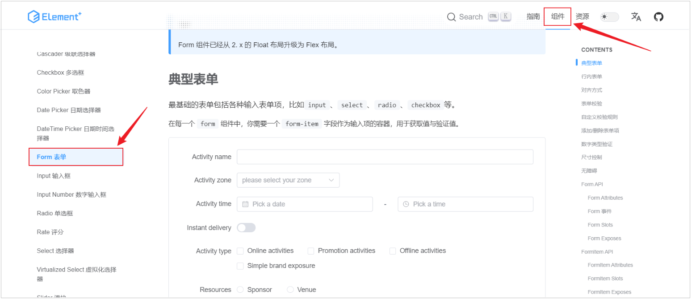
然后复制如下代码到我们的组件文件 Element.vue 的 <template></template> 模块中：
<!-- Form 表单 -->
<el-form :inline="true" :model="formInline" class="demo-form-inline">
<el-form-item label="Approved by">
<el-input v-model="formInline.user" placeholder="Approved by" clearable />
</el-form-item>
<el-form-item label="Activity zone">
<el-select v-model="formInline.region" placeholder="Activity zone" clearable>
<el-option label="Zone one" value="shanghai" />
<el-option label="Zone two" value="beijing" />
</el-select>
</el-form-item>
<el-form-item label="Activity time">
<el-date-picker v-model="formInline.date" type="date" placeholder="Pick a date" clearable/>
</el-form-item>
<el-form-item>
<el-button type="primary" @click="onSubmit">Query</el-button>
</el-form-item>
</el-form>
然后复制如下代码到我们的组件文件 Element.vue 的 <script></script> 模块中：
// Form表单
const formInline = ref({
user: '',
region: '',
date: '',
})
const onSubmit = () => {
console.log('submit!')
}
最终，完成的 Element.vue 的代码如下：
<script setup>
import { ref } from 'vue'
const tableData = [
{date: '2016-05-03', name: 'Tom', address: 'No. 189, Grove St, Los Angeles'},
{date: '2016-05-02', name: 'Tom', address: 'No. 189, Grove St, Los Angeles'},
{date: '2016-05-04', name: 'Tom', address: 'No. 189, Grove St, Los Angeles'},
{date: '2016-05-01', name: 'Tom', address: 'No. 189, Grove St, Los Angeles'}
]
const currentPage4 = ref(4)
const pageSize4 = ref(100)
const handleSizeChange = (val) => {
console.log(`${val} items per page`)
}
const handleCurrentChange = (val) => {
console.log(`current page: ${val}`)
}
// Dialog对话框
const dialogTableVisible = ref(false)
// Form表单
const formInline = ref({
user: '',
region: '',
date: '',
})
const onSubmit = () => {
console.log('submit!')
}
</script>
<template>
<!-- Button按钮 -->
<el-row class="mb-4">
<el-button>Default</el-button>
<el-button type="primary">Primary</el-button>
<el-button type="success">Success</el-button>
<el-button type="info">Info</el-button>
<el-button type="warning">Warning</el-button>
<el-button type="danger">Danger</el-button>
</el-row>
<br>
<!-- Table表格 -->
<el-table :data="tableData" border style="width: 100%">
<el-table-column prop="date" label="Date" width="180" />
<el-table-column prop="name" label="Name" width="180" />
<el-table-column prop="address" label="Address" />
</el-table>
<br>
<el-pagination
v-model:current-page="currentPage4"
v-model:page-size="pageSize4"
:page-sizes="[100, 200, 300, 400]"
layout="total, sizes, prev, pager, next, jumper"
:total="400"
@size-change="handleSizeChange"
@current-change="handleCurrentChange"
/>
<br>
<el-button @click="dialogTableVisible = true">
打开对话框
</el-button>
<el-dialog v-model="dialogTableVisible" title="Shipping address">
<el-table :data="tableData">
<el-table-column property="date" label="Date" width="150" />
<el-table-column property="name" label="Name" width="200" />
<el-table-column property="address" label="Address" />
</el-table>
</el-dialog>
<br><br>
<!-- Form 表单 -->
<el-form :inline="true" :model="formInline" class="demo-form-inline">
<el-form-item label="Approved by">
<el-input v-model="formInline.user" placeholder="Approved by" clearable />
</el-form-item>
<el-form-item label="Activity zone">
<el-select v-model="formInline.region" placeholder="Activity zone" clearable>
<el-option label="Zone one" value="shanghai" />
<el-option label="Zone two" value="beijing" />
</el-select>
</el-form-item>
<el-form-item label="Activity time">
<el-date-picker v-model="formInline.date" type="date" placeholder="Pick a date" clearable/>
</el-form-item>
<el-form-item>
<el-button type="primary" @click="onSubmit">Query</el-button>
</el-form-item>
</el-form>
</template>
<style scoped>
</style>
打开浏览器，查看页面效果：
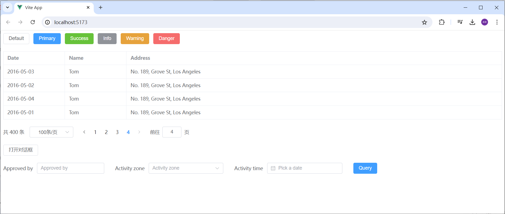
实现界面交互
创建好自己的元素后
需求：基于ElementPlus组件库制作如下页面，并异步获取数据，完成页面展示。
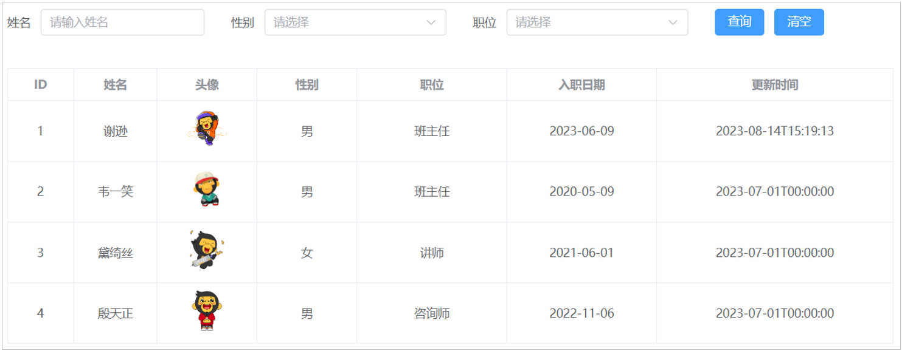
1). 准备工作
由于在案例中，我们需要在vue项目中使用Axios，需要安装axios，需要在当前项目的目录下执行如下命令：
npm install axios
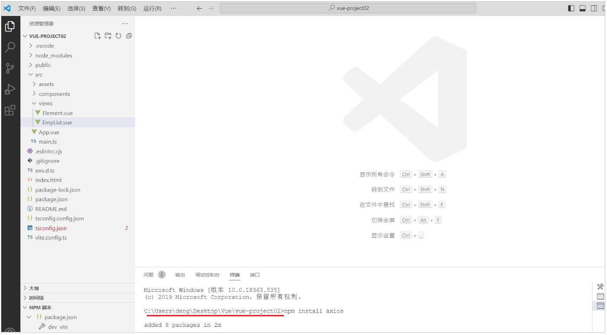
2). 编码实现
在views目录下，再定义一个文件 EmpList.vue，具体代码实现如下：
</template>这个双标签中内容,会实现渲染,在表格展示图片时使用
也可以用于实现 JS 交互 , 实现多选一 : v-if,v-else-if, v-else : "其他"
<script setup>
import { ref, onMounted } from 'vue'
import axios from 'axios'
const searchEmp = ref({
name: '',
gender: '',
job: '',
})
onMounted(() => {
search();
})
const search = async () => {
const url = `https://web-server.itheima.net/emps/list?name=${searchEmp.value.name}&gender=${searchEmp.value.gender}&job=${searchEmp.value.job}`
const result = await axios.get(url)
tableData.value = result.data.data
}
const clear = () => {
searchEmp.value = { name: '', gender: '', job: '' }
search();
}
let tableData = ref([])
</script>
<template>
<div id="center">
<el-form :inline="true" :model="searchEmp" class="demo-form-inline">
<el-form-item label="姓名">
<el-input v-model="searchEmp.name" placeholder="请输入姓名" clearable />
</el-form-item>
<el-form-item label="性别">
<el-select v-model="searchEmp.gender" placeholder="请选择" clearable>
<el-option label="男" value="1" />
<el-option label="女" value="2" />
</el-select>
</el-form-item>
<el-form-item label="职位">
<el-select v-model="searchEmp.job" placeholder="请选择" clearable>
<el-option label="班主任" value="1" />
<el-option label="讲师" value="2" />
<el-option label="咨询师" value="3" />
</el-select>
</el-form-item>
<el-form-item>
<el-button type="primary" @click="search">查询</el-button>
<el-button type="primary" @click="clear">清空</el-button>
</el-form-item>
</el-form>
<br>
<!-- 表格 -->
<el-table :data="tableData" border style="width: 100%; ">
<el-table-column prop="id" label="ID" width="80" align="center" />
<el-table-column prop="name" label="姓名" width="100" align="center" />
<el-table-column label="头像" width="120" align="center">
<template #default="scope">
<img :src="scope.row.image" width="50">
</template>
</el-table-column>
<el-table-column prop="gender" label="性别" width="120" align="center">
<template #default="scope">
{{ scope.row.gender == 1 ? '男' : '女' }}
</template>
</el-table-column>
<el-table-column label="职位" width="180" align="center">
<template #default="scope">
<span v-if="scope.row.job == 1">班主任</span>
<span v-else-if="scope.row.job == 2">讲师</span>
<span v-else-if="scope.row.job == 3">咨询师</span>
<span v-else>其他</span>
</template>
</el-table-column>
<el-table-column prop="entrydate" label="入职日期" width="180" align="center" />
<el-table-column prop="updatetime" label="更新时间" align="center" />
</el-table>
</div>
</template>
<style scoped>
#center {
width: 70%;
margin: auto;
margin-top: 100px;
}
</style>
在 App.vue 中引入 EmpList.vue 文件
<script setup>
import EmpList from './views/EmpList.vue'
</script>
<template>
<EmpList></EmpList>
</template>
<style scoped>
</style>
3). 打开浏览器，查看页面效果
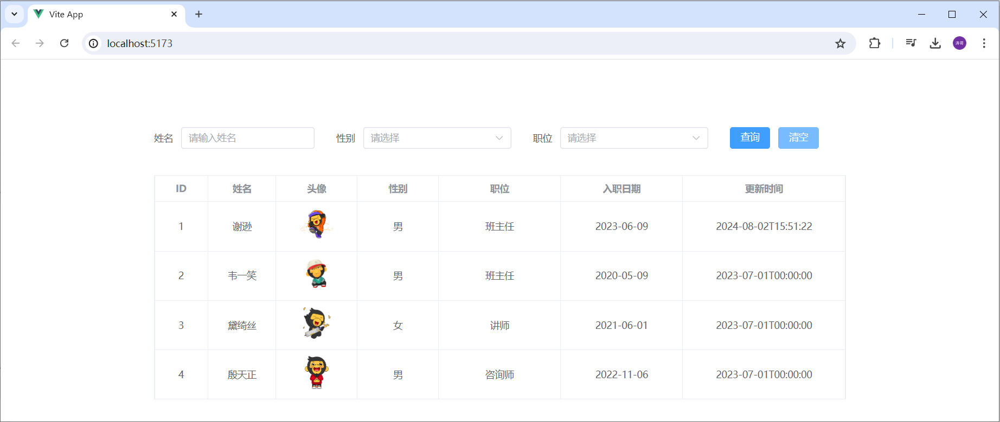